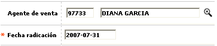

Novedad agente de venta
En este formulario invocado desde la opción ingreso de novedades, (issuer) la entidad puede modificar o adicionar la información del nombre del agente que efectivamente colocó el correspondiente producto. Este dato puede ser de utilidad para la entidad, por ejemplo al momento de establecer el cumplimiento de metas y el pago de comisiones a los agentes por las labores efectuadas.

Descripción de campos
Agente de venta |
Campo que posee lista de valores de la cual se puede seleccionar el agente que efectivamente colocó el producto. El sistema inicialmente ubica los agentes activos que pertenezcan al Convenio asociado al producto correspondiente, si no hay funcionarios o los allí relacionados se encuentran Inactivos, la forma controla que se desplieguen todos los funcionarios activos que hagan parte del mismo grupo de afinidad al que pertenece el producto, si no existen funcionarios con ese mismo grupo de afinidad o se encuentran inactivos, la lista trae todos los funcionarios que estén activos. |
Fecha de radicación |
En este campo obligatorio se registra en formato YYYY-MM-DD la fecha en la cual se solicitó la actualización del agente de venta y que puede ser una fecha anterior a la actual del sistema, facilitando el ingreso de novedades de fechas anteriores. |